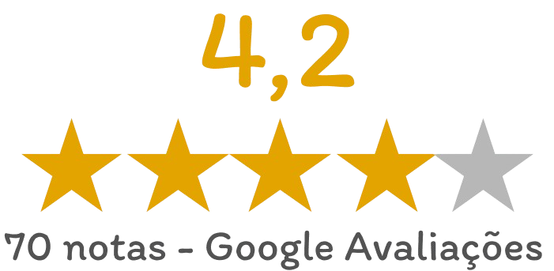

OPINIÃO
Kaique Marques: 1☆
Puro mimimi. Mais esquerdista e sujo, impossível. Demoniz4r4m o Trump e eles se monstram como santos. Se você não paga pelo produto, você é o produto. Como as redes sociais são grátis, é óbvio que vão usar seus dados para fazer propagandas.
Cleyton Ribeiro: 5☆
Feito de esquerdistas para esquerdistas. Mais uma tentativa nefasta do progressismo de tentar deslegitimar o outro lado se valendo dos seus ativistas políticos travestidos de jornalistas. A esquerda mundial, assim como a brasileira, mente como respira.
Fernando Guimarâes: 1☆
O documentário é muito parcial, dá a entender que a direita é radical e a esquerda é boazinha. Cita até o Brasil, e sabemos que aqui foi o PT que impulsionou mensagens no Whatsup, pagou por isso e acusaram Bolsonaro e nada foi provado, quanto ao pt, até na CPI ficou contatado por meio de depoimento."
Lidi Calado: 5☆
Engraçado é ver gente com venda nos olhos, daqui a pouco vai ter gente aqui nos comentários dizendo que o telefone não escuta mais que na verdade ele tem uma bola de cristal. Parem de ter bandidos/políticos de estimação! Tá envolvido com crime não presta independe do partido, só isso. Mas invés disso escolhe um bandido pra defender! Não precisa tá defendendo só porque se arrependeu do voto não. Pode aceitar que descobriu que é só mais um bandido e tá tudo bem, próxima eleição muda de voto!
Otaviano K: 1☆
Muito fraco de argumentos. É um documentário de esquerda que dá ênfase a uma pessoa dizendo que no Brasil foi eleito um governo autoritário por causa do mau uso das redes sociais. Absurdo!
As redes sociais libertaram as pessoas de suas prisões alienatórias como a TV Globo. Vão tentar de tudo mas Bolsonaro será reeleito e quem ele indicar para futura eleição.
O tal do "governo autoritário" tem devolvido dinheiro para a população, dinheiro que seria roubado em
governos de esquerda.
Guia do Cinéfilo: 3☆
Após anos desde o início da internet poucas gerações atrás, e com o avanço na maneira instantânea em se comunicar de qualquer lugar através de uso de dados, uma pergunta anda em nossas mentes frequentemente: eu estou sendo manipulado? Justificando essa indagação, no final de julho passado, a toda poderosa do streaming Netflix lançou o impactante documentário Privacidade Hackeada, que fala antes de mais nada sobre o escândalo de papéis de ‘hackers’ da empresa britânica Cambridge Analytica em famosas campanhas políticas.
Tomatometer

86%
Popcornmeeter

66%
